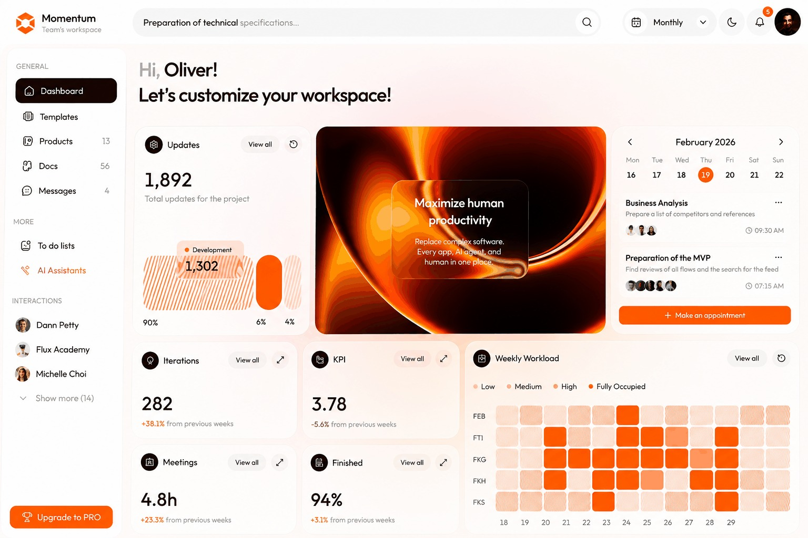
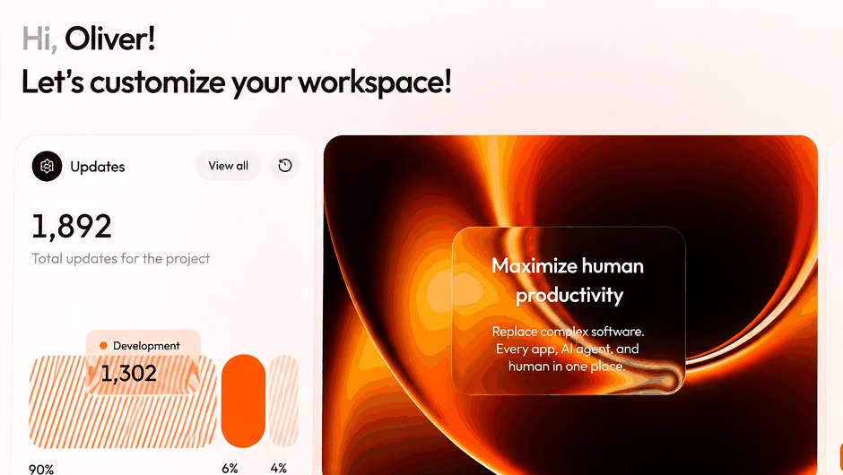
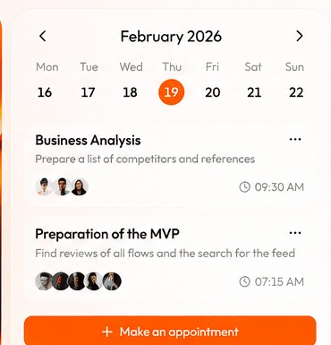
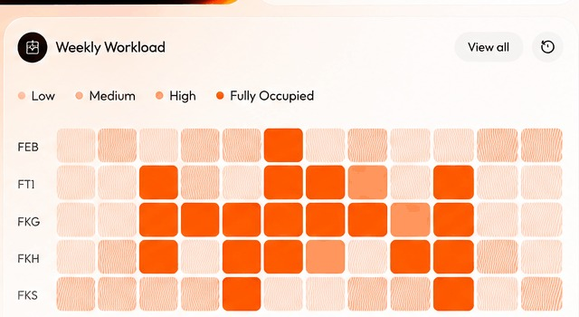
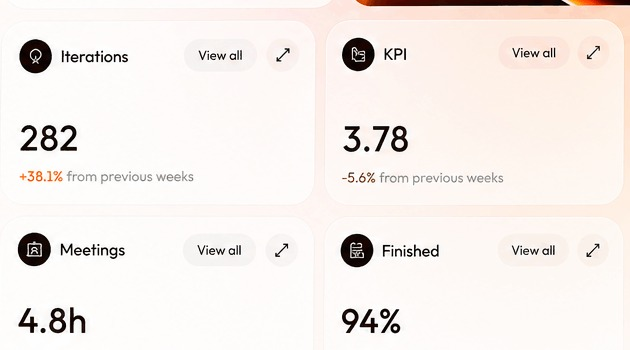

A clearer view of team performance
Momentum is a workspace analytics experience that brings activity, performance signals, and team context into a single dashboard. The visual direction emphasizes quick scanning while still allowing users to move into deeper operational detail.

Why this product exists
Operational dashboards can become noisy when every metric receives equal visual weight. Momentum needed a hierarchy that makes the important signal visible first and turns a large amount of activity data into an understandable story.
Who it is for
Managers, team leads, and operators who need a high-level pulse of workspace activity and performance without manually assembling information from multiple places.
The design challenge
Momentum is a workspace analytics experience that brings activity, performance signals, and team context into a single dashboard. The visual direction emphasizes quick scanning while still allowing users to move into deeper operational detail.
What needed to change
The design work starts by turning broad business friction into a small set of user-facing problems that can be prioritized and solved.
Problem statement
- Too many metrics compete for attention.
- Users need a fast understanding of what changed and why.
- Performance information can be difficult to compare over time.
- A dashboard must support both quick scanning and deeper investigation.
Design hypothesis
Build a dashboard around hierarchy: summary metrics first, contextual trends next, and detailed activity after that. Use focused cards, visual patterns, and consistent filters so users can move from “what is happening?” to “where should I look?” quickly.
What the product needed to do
A case study should make the product legible before showing every screen. These are the major capabilities that shaped the information architecture.
How I approached the problem
The process is shown as a decision-making loop rather than a decorative five-step diagram.
Design decisions with a reason
Instead of listing deliverables, connect the interface back to the user or business problem it was meant to solve.
Prioritize signal over decoration
Translate the insight into a visible interface behavior, clearer hierarchy, or more predictable flow. The goal is to reduce friction without removing useful context.
Use consistent card anatomy
Translate the insight into a visible interface behavior, clearer hierarchy, or more predictable flow. The goal is to reduce friction without removing useful context.
Make trends contextual, not isolated
Translate the insight into a visible interface behavior, clearer hierarchy, or more predictable flow. The goal is to reduce friction without removing useful context.
Keep navigation predictable
Translate the insight into a visible interface behavior, clearer hierarchy, or more predictable flow. The goal is to reduce friction without removing useful context.
Let the interface do the talking
Large visuals keep the case study grounded in the actual work. Supporting visuals are used where the original showcase does not expose enough detail.




ScoreBall →
Live scores and match intelligence